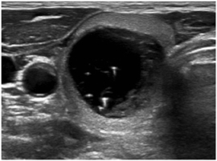
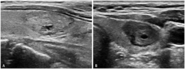
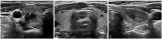
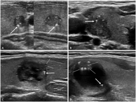
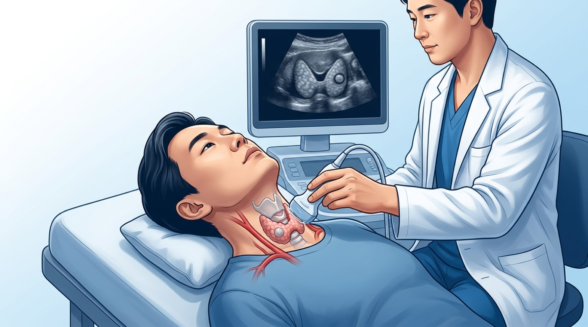

핵심
결절이 보인다고 모두 세침흡인검사를 하지는 않습니다.
좋은 모양은 지켜보고, 의심 모양은 기준 크기에서 확인합니다. 검사 뒤에는 Bethesda 등급에 따라 추적 방향이 달라집니다.
1단계모양
초음파에서 양성 모양인지, 의심 소견이 있는지 봅니다.
2단계크기
등급별 세침흡인검사(FNA) 기준을 넘는지 확인합니다.
3단계결과
Bethesda 결과와 초음파를 합쳐 추적 계획을 정합니다.
 K-TIRADS 초음파 모습과 FNA 기준
K-TIRADS 초음파 모습과 FNA 기준
| 등급 | 초음파 예시 | 초음파 모양 | 크기 기준 — FNA |
|---|---|---|---|
| K-TIRADS 2양성 |  |
전형적 양성 모양 — 해면모양(작은 물주머니가 벌집처럼 모인 모양), 순수 낭종, 낭성 부분 안 혜성꼬리 인공음영(양성을 시사하는 밝은 꼬리 모양 신호). | 일상적 FNA 없음. 커져서 치료 계획이 필요하거나 절제술 전 확인이 필요하면 예외. |
| K-TIRADS 3낮은의심 |  |
작으면 추적 우선 — 부분 낭성 또는 등/고에코(주변 갑상선과 같거나 더 밝게 보임) 결절이며 3대 의심소견이 없음. | 2 cm 초과부터 FNA 고려. 작고 안정적이면 추적 위주. |
| K-TIRADS 4중간의심 |  |
정밀 확인 후보 — 의심소견 없는 저에코(더 어둡게 보임) 고형결절, 의심소견 동반 등/고에코, 완전 석회화. | 1-1.5 cm 초과. 위치, 초음파 소견, 임상 위험인자, 선호도에 따라 결정. |
| K-TIRADS 5높은의심 |  |
놓치면 안 되는 군 — 저에코 고형결절에 점상 고에코, 세로로 긴 모양, 불규칙 경계 중 하나. | 1 cm 초과부터 FNA. 림프절 전이, 명백한 외부 침범 등은 크기와 무관. |
의심 신호

- 점상 고에코미세석회화처럼 보이는 작은 밝은 점. 고형 저에코 결절 안에 있으면 더 경계합니다.
- 세로로 긴 모양taller-than-wide. 옆보다 앞뒤로 더 깊게 자라는 형태입니다.
- 불규칙 경계삐죽하거나 미세엽상 경계. 주변으로 파고드는 듯하면 의심도가 올라갑니다.
- 임상 고위험의심 림프절, 명백한 외부 침범, 원격 전이, 수질암 의심은 크기 기준보다 우선합니다.
 세침흡인검사 결과: Bethesda 등급별 다음 단계
세침흡인검사 결과: Bethesda 등급별 다음 단계
| 등급 | 결과 | 성인 암위험 | |
|---|---|---|---|
| I | 비진단 | 약 13% | 초음파 유도 재검. 반복 비진단·성장·강한 의심이면 중심부 바늘생검(CNB) 또는 진단적 수술 고려. |
| II | 양성 | 약 4% | 즉시 치료는 보통 불필요. K5 모양은 6-12개월, K3/4는 12-24개월 후 재평가. |
| III | 비정형(AUS) | 약 22% | 재FNA, CNB, 분자검사, 추적 또는 진단적 수술 중 선택. |
| IV | 여포종양 | 약 30% | 진단적 엽절제술을 주로 고려. 분자검사 결과에 따라 선택적 추적 가능. |
| V-VI | 악성 의심/악성 | 약 74-97% | 수술 평가가 기본. 성인 저위험 미세유두암은 조건이 맞으면 적극적 관찰도 논의. |
결절 발견은 출발점입니다. 좋은 모양은 지켜보고, 의심 모양은 기준 크기에서 확인합니다. 의미 있는 성장 또는 새 의심소견이 생기면 판정을 업데이트합니다.